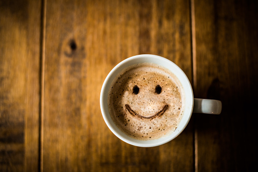
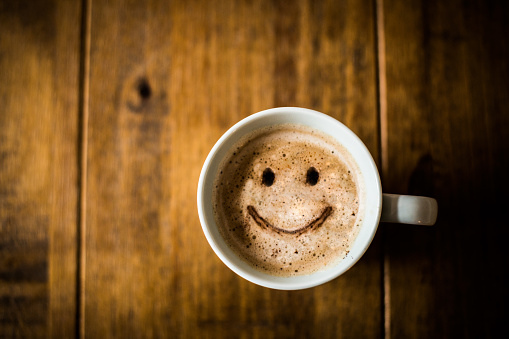
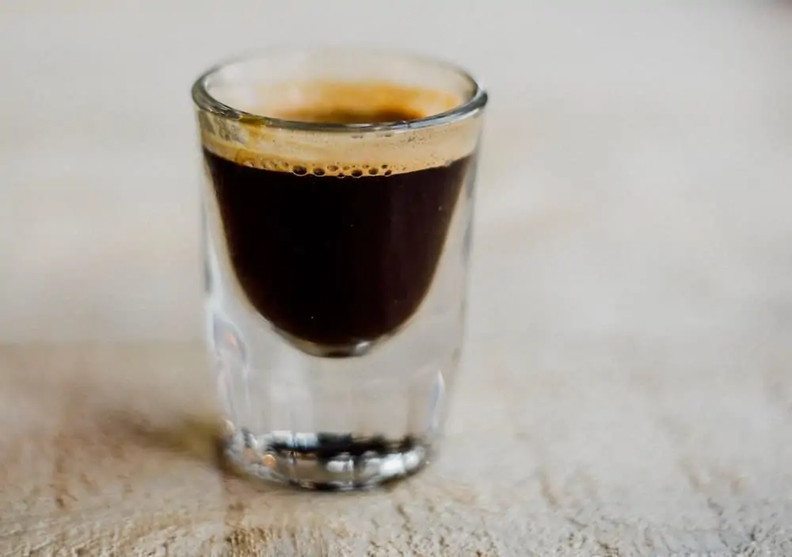
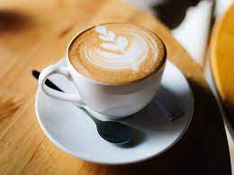
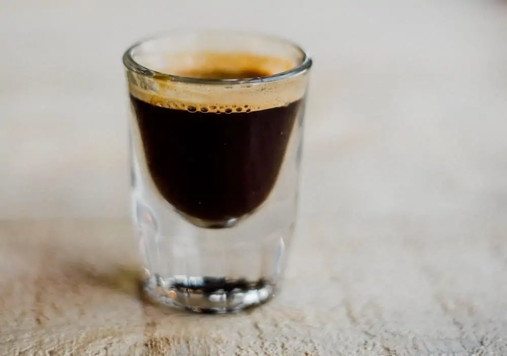
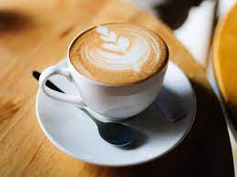

START YOUR DAY
WITH COFFEE
Good coffee is flavoursome and aromatic with a balance of sweetness and acidity. The flavour and aroma range from chocolate and nut to fruity and floral. Good coffee has a natural sweetness that is complemented by a refreshing acidity. Bitterness is always present in coffee, but it never dominates the cup
 

Different Types of Coffee Beans


.jpg)
Arabica Coffee Beans (Coffea arabica)
Arabica beans are by far the most popular type of coffee beans, making up about 60% of the world’s coffee. These tasty beans originated many centuries ago in the highlands of Ethiopia, and may even be the first coffee beans ever consumed! The name Arabica likely comes from the beans’ popularity in 7th-century Arabia
Robusta Coffee Beans (Coffea caniphora)
The second most popular type of coffee bean is Robusta. This bean originated in sub-Saharan Africa and is now grown primarily in Africa and Indonesia. It’s also particularly popular in Vietnam and is often mixed into coffee blends. It’s a less expensive variety, making it a very budget-friendly choice for roasters.
Coffee Drinks
cold brew

Low acidity and sweet, cold brew coffee is made by adding coarsely ground beans to cold water and
letting the mixture brew for several hours
Single or double espresso

The basis of all espresso drinks is a shot of espresso, made by pushing pressurized hot water through
finely-ground, tightly-tamped coffee.
Cappuccino

A typical cappuccino is one-third espresso, one-third hot milk, and one-third milk foam. You can also
order a dry cappuccino, which will be made with less milk.
Latte
.png)
This classic drink is typically 1/3 espresso and 2/3 steamed milk, topped with a thin layer of foam,
cold brew
Low acidity and sweet, cold brew coffee is made by adding coarsely ground beans to cold water and letting the mixture brew for several hours
Single or double espresso
The basis of all espresso drinks is a shot of espresso, made by pushing pressurized hot water through finely-ground, tightly-tamped coffee.
Cappuccino
A typical cappuccino is one-third espresso, one-third hot milk, and one-third milk foam. You can also order a dry cappuccino, which will be made with less milk.
Latte
This classic drink is typically 1/3 espresso and 2/3 steamed milk, topped with a thin layer of foam,